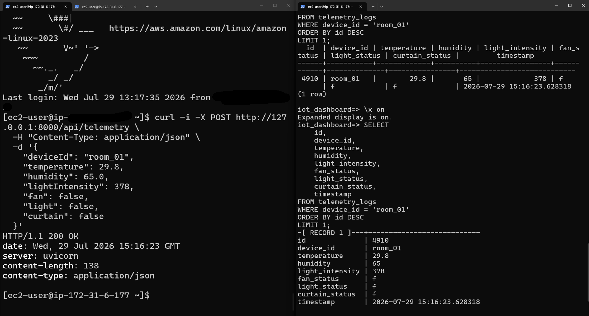
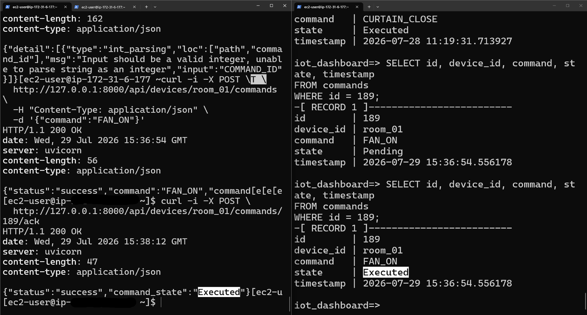

Trước tiên, xác minh độc lập từng lớp kết nối; sau đó kiểm tra toàn bộ luồng telemetry và lệnh. Mã nguồn backend và firmware đã được rà soát để xác định đúng lược đồ và hành vi. Trước khi kiểm thử, hãy dùng FastAPI /docs hoặc /openapi.json để đối chiếu với phiên bản đang triển khai.
room_01.| ID | Mục tiêu | Điều kiện trước | Các bước | Kết quả mong đợi | Thực tế/bằng chứng | Đạt/Không đạt |
|---|---|---|---|---|---|---|
| T01 | Sức khỏe backend | Dịch vụ đang hoạt động | GET /api/health |
HTTP 200 và nội dung kiểm tra sức khỏe đúng định nghĩa | Phản hồi HTTP 200 và log sức khỏe backend | Đạt |
| T02 | POST telemetry | Biết schema OpenAPI; DB truy cập được | Gửi một payload room_01 hợp lệ |
Phản hồi thành công và lưu một bản ghi | Hình 15: API và bản ghi SQL khớp nhau | Đạt |
| T03 | Telemetry mới nhất | Hoàn tất T02 | GET /api/devices/room_01/latest |
Trả bản ghi mới nhất | Phản hồi API mới nhất đã được đối chiếu | Đạt |
| T04 | Lịch sử | Có nhiều bản ghi | GET /api/devices/room_01/history |
Trả lịch sử đúng thiết bị và đúng thứ tự | Phản hồi lịch sử và biểu đồ đã được đối chiếu | Đạt |
| T05 | Tạo lệnh | Không có thao tác trùng đang chờ | POST một lệnh được hỗ trợ | ID lệnh có trạng thái Pending |
Hình 16: lệnh ID 189 ở trạng thái Pending |
Đạt |
| T06 | Phần cứng thăm dò lệnh | Thiết bị trực tuyến | Quan sát quá trình thăm dò sau T05 | Thiết bị nhận đúng ID/lệnh đúng một lần | Video demo phần cứng | Đạt |
| T07 | Bật/tắt quạt | Quạt được đấu nối an toàn | Gửi FAN_ON, rồi FAN_OFF |
Trạng thái vật lý đúng với từng lệnh | Video demo phần cứng | Đạt |
| T08 | Bật/tắt đèn | Đèn/relay được đấu nối an toàn | Gửi LIGHT_ON, rồi LIGHT_OFF |
Trạng thái vật lý đúng với từng lệnh | Video demo phần cứng | Đạt |
| T09 | Mở/đóng rèm | Servo được đấu nối an toàn | Gửi CURTAIN_OPEN, rồi CURTAIN_CLOSE |
Servo quay đến 90° khi mở và trở về 0° khi đóng, đúng với giá trị được định nghĩa trong firmware | Video demo phần cứng | Đạt |
| T10 | Vòng đời ACK | Có lệnh từ T05-T09 | Quan sát POST ACK và truy vấn trạng thái | Cùng một lệnh đổi Pending → Executed |
Hình 16: cùng ID 189 chuyển sang Executed |
Đạt |
| T11 | Khả năng lưu trữ bền vững của PostgreSQL | Có phiên kết nối DB | Truy vấn sau khi gửi telemetry/lệnh | Bản ghi vẫn còn sau khi tải lại hoặc khởi động lại API | Bằng chứng SQL trong Hình 15 và Hình 16 | Đạt |
| T12 | Log CloudWatch | Agent đã cấu hình | Tạo yêu cầu sức khỏe/telemetry mới | Sự kiện backend mới xuất hiện đúng luồng log | Log backend trong mục 5.9 | Đạt |
| T13 | Mất kết nối Wi-Fi | Thiết bị ở trạng thái an toàn | Ngắt Wi-Fi, quan sát, kết nối lại | Kết nối lại thành công; không lặp lệnh | Kết quả kiểm thử kết nối lại và Serial Monitor | Đạt |
Từ EC2 Linux Bash:
curl -i http://127.0.0.1:8000/api/health
curl -s http://127.0.0.1:8000/api/devices/room_01/latest
curl -s http://127.0.0.1:8000/api/devices/room_01/history
Tạo telemetry bằng các trường camelCase ở mục 5.6. Tạo lệnh với { "command": "FAN_ON" }. Trường Pydantic cũng có alias Command, nhưng do populate_by_name=True, tên viết thường command vẫn được chấp nhận. Bản ghi thiết bị phải tồn tại trước và thường được tạo bởi yêu cầu telemetry đầu tiên. Trong PostgreSQL psql, kiểm tra trạng thái lệnh:
SELECT
id,
device_id,
command,
state
FROM commands
ORDER BY id DESC
LIMIT 6;
Thiết bị có thể kiểm tra lệnh và gửi ACK nhanh đến mức truy vấn sau đó không còn thấy trạng thái Pending. Vì vậy, hãy lưu phản hồi của lệnh POST khi còn ở Pending, rồi chụp bản ghi Executed có cùng ID.
Hình 15 sử dụng một yêu cầu curl có kiểm soát để xác minh riêng luồng ghi dữ liệu từ FastAPI vào Amazon RDS. Việc tích hợp YOLO UNO đã được kiểm thử riêng trước đó; hình này chỉ cung cấp bằng chứng cho test case T02 về API và cơ sở dữ liệu.

Hình 15. Telemetry được gửi qua REST API và lưu thành công trong Amazon RDS for PostgreSQL.
Để kiểm tra riêng vòng đời lệnh khi không có phần cứng tại thời điểm thu thập ảnh, lệnh FAN_ON được tạo qua API và endpoint ACK được gọi thủ công. Bằng chứng cho thấy cùng lệnh ID 189 chuyển từ Pending sang Executed. Phép kiểm tra này xác minh luồng FastAPI và Amazon RDS, không xác nhận thiết bị vật lý đã thực thi lệnh.

Hình 16. Kiểm tra có kiểm soát vòng đời của cùng một lệnh từ Pending sang Executed thông qua endpoint ACK của FastAPI.
Quá trình dashboard gửi lệnh và phần cứng thực thi được ghi lại trong video demo trên Google Drive. Video được dùng làm bằng chứng cho quá trình thiết bị nhận lệnh và phản ứng vật lý trong các test case T06-T09.
Trong T13, chỉ ngắt Wi-Fi khi thiết bị chấp hành đang ở trạng thái an toàn. Firmware phải báo mất kết nối, kết nối lại thành công và tiếp tục thăm dò lệnh mà không thực thi lại lệnh trước đó. Nếu cần gửi lại ACK sau khi mạng phục hồi, thiết bị chỉ được gửi lại ACK, không được lặp lại thao tác điều khiển.
Mọi dòng T01-T13 phải có giá trị quan sát trong cột Thực tế/bằng chứng và trạng thái Đạt, Không đạt hoặc Chưa chạy. Một phép kiểm thử đầu cuối chỉ được xem là đạt khi liên kết được cùng ID thiết bị/lệnh qua API, PostgreSQL, firmware, dashboard và log liên quan.
Đây là kế hoạch kiểm thử, không phải bằng chứng cho thấy các phép kiểm thử đã được thực hiện. Không gọi đây là kiểm thử tải và không tự tạo số liệu về độ trễ, thông lượng hoặc độ tin cậy. Với mỗi phép kiểm thử không đạt, cần ghi rõ lớp xảy ra lỗi, log hoặc yêu cầu làm bằng chứng, người phụ trách, cách khắc phục và kết quả sau khi chạy lại.
| Hiện tượng | Nội dung cần kiểm tra |
|---|---|
Không thấy Pending |
Lưu phản hồi của yêu cầu POST tạo lệnh, sau đó truy vấn cùng ID sau ACK |
| Giao diện và cơ sở dữ liệu không khớp | Xác nhận nguồn dữ liệu thật/mô phỏng, route API số nhiều và bản ghi cơ sở dữ liệu mới nhất |
| Lệnh bị lặp | So sánh ID lệnh, lastAck, pendingAck và tách việc gửi lại ACK khỏi việc điều khiển thiết bị |
| Không tái tạo được phép kiểm thử | Ghi mã commit, khu vực, ID thiết bị, timestamp/múi giờ và điều kiện ban đầu chính xác |
| Bằng chứng có dữ liệu nhạy cảm | Che thông tin và chụp lại; thay mới bí mật đã lộ trước khi tiếp tục |
Tiếp theo: cấu hình và xác minh CloudWatch.